Muse 成品号：把账号换绑成自己的邮箱
号买回来先把临时邮箱换成你自己的，一共 7 步，照着点就行。
质保首登
视频教程
视频没播出来？点这里直接打开视频看
1
点「设置」→「通用」→「Meta 账户」
登录后，点左下角「设置」，再点「通用」，然后点「Meta 账户」。
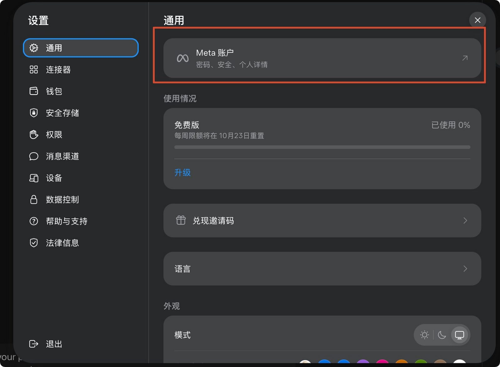
2
找到现在绑的临时邮箱
在账户中心找到现在绑的临时邮箱，点进去，再点「Add or edit contact info」。
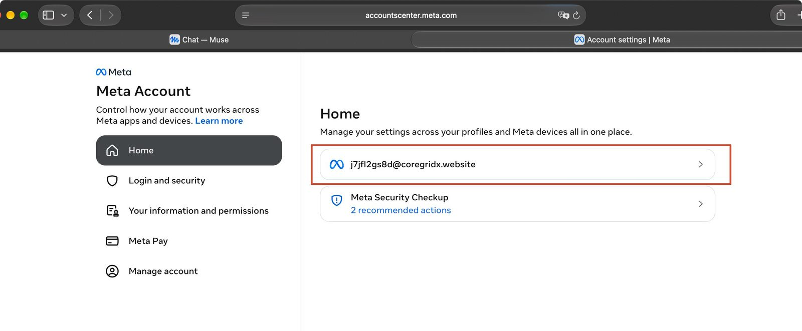
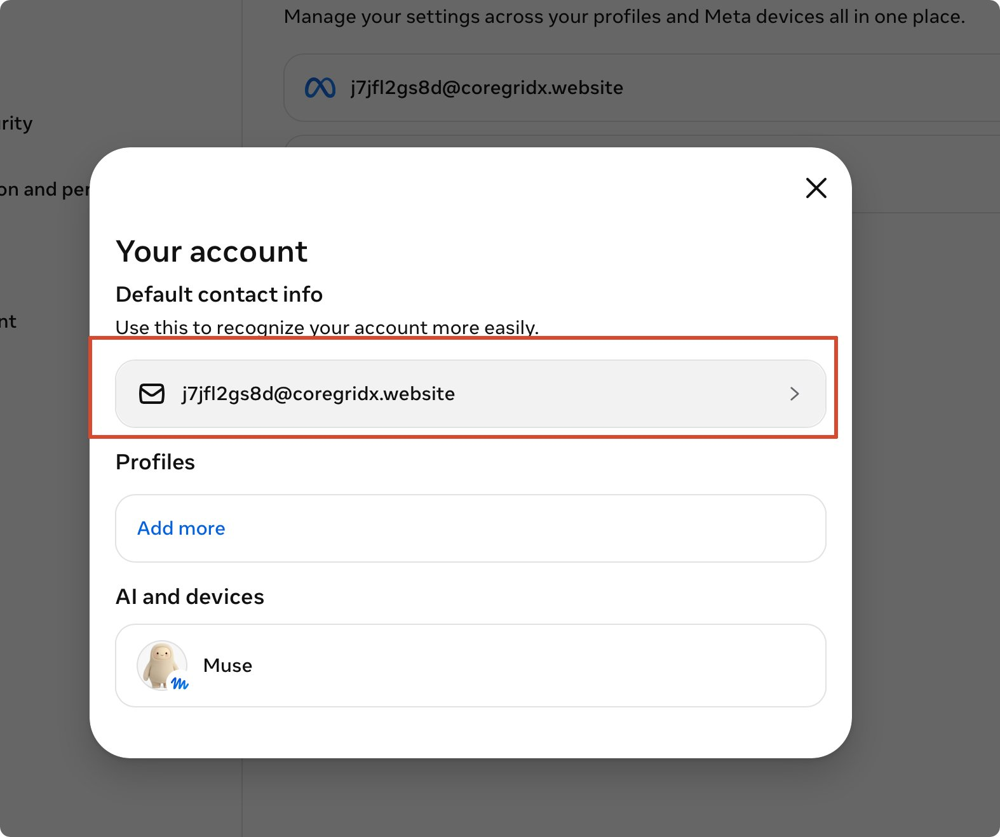
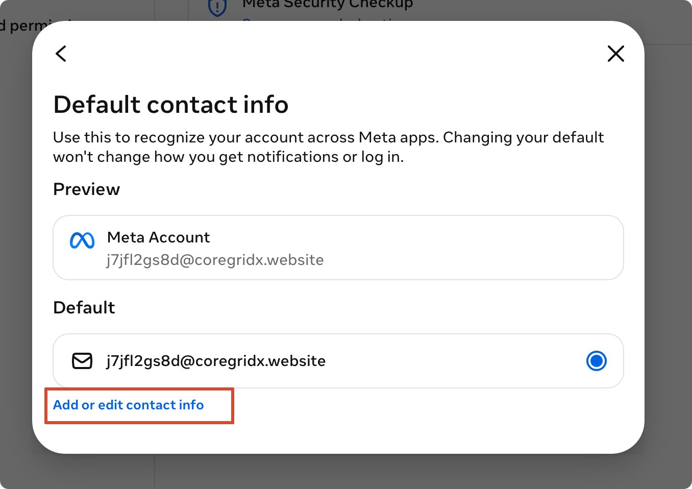
3
加一个自己的新邮箱
点「Add new contact info」→「Add email」，填上你的邮箱，点 Next。
注意：这个邮箱必须是从来没用过 Muse 的新邮箱，用过的绑不上。
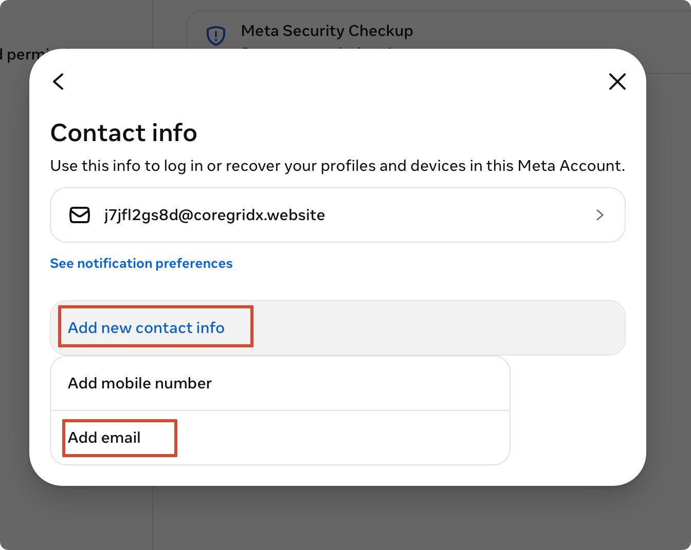
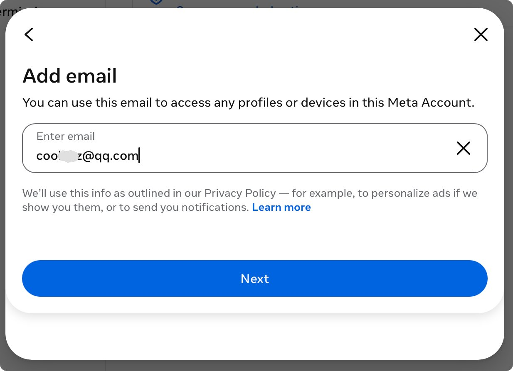
4
填验证码
去新邮箱里查收验证码，填进去，点 Next。
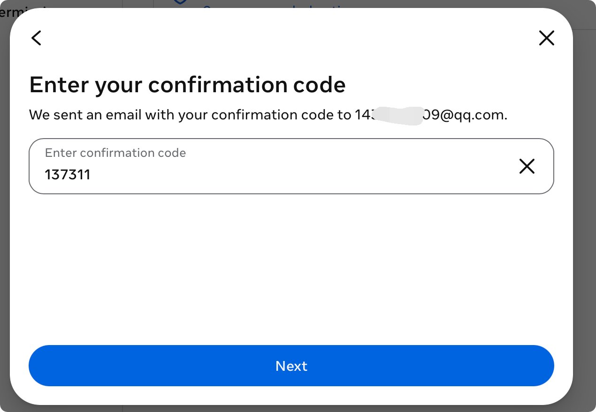
5
确认新邮箱绑好，并设为默认
回到首页，看新邮箱有没有绑上；再把它设成默认（圆圈选在新邮箱上）。
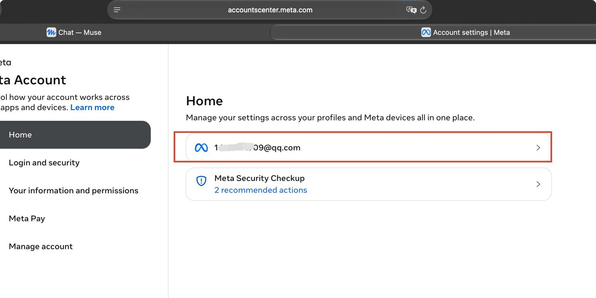
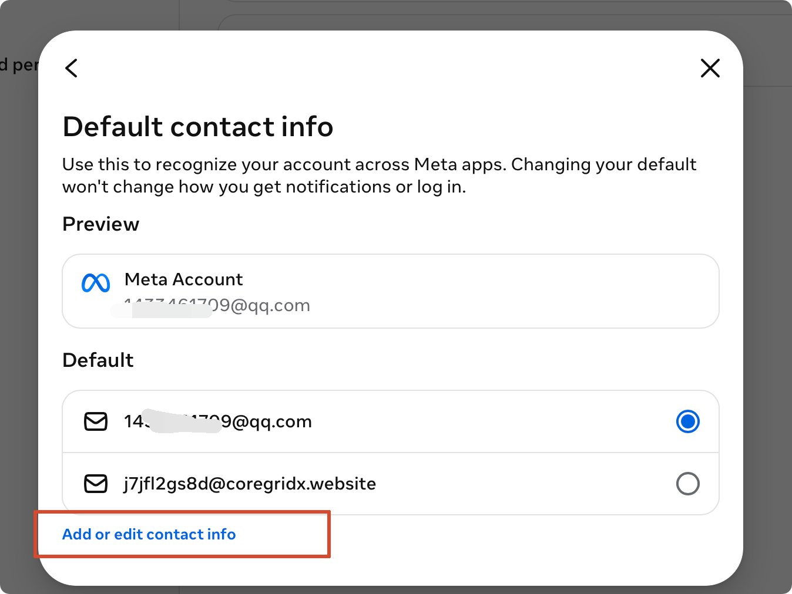
6
把旧的临时邮箱删掉
点进旧的临时邮箱，点「Delete email」，确认框里再点「Delete」。
注意：这一步一定要做，不删的话，别人还能用旧邮箱登你的号。
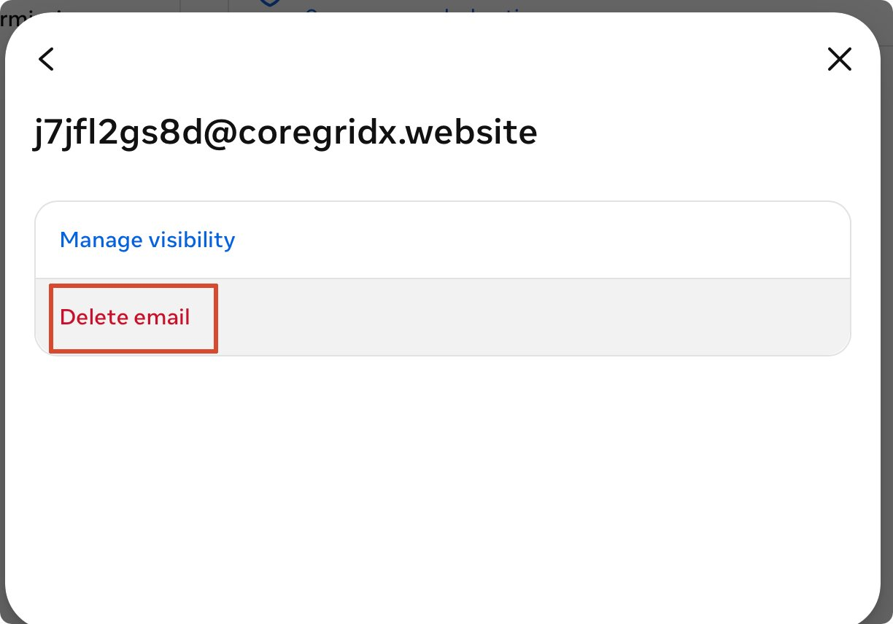
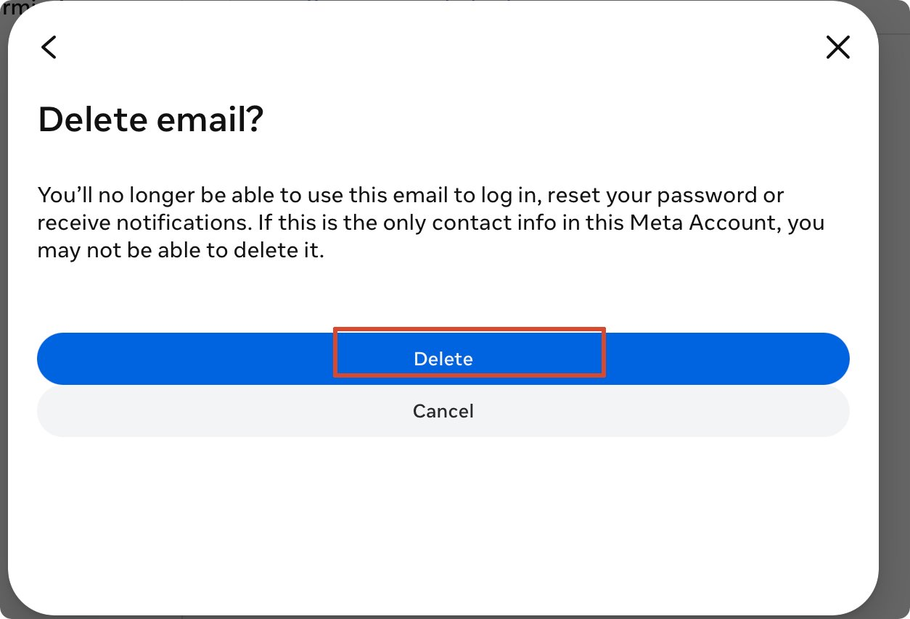
7
看到「Email deleted」就完成了
页面弹出「Email deleted」，首页也只剩你自己的邮箱，换绑就完成了。
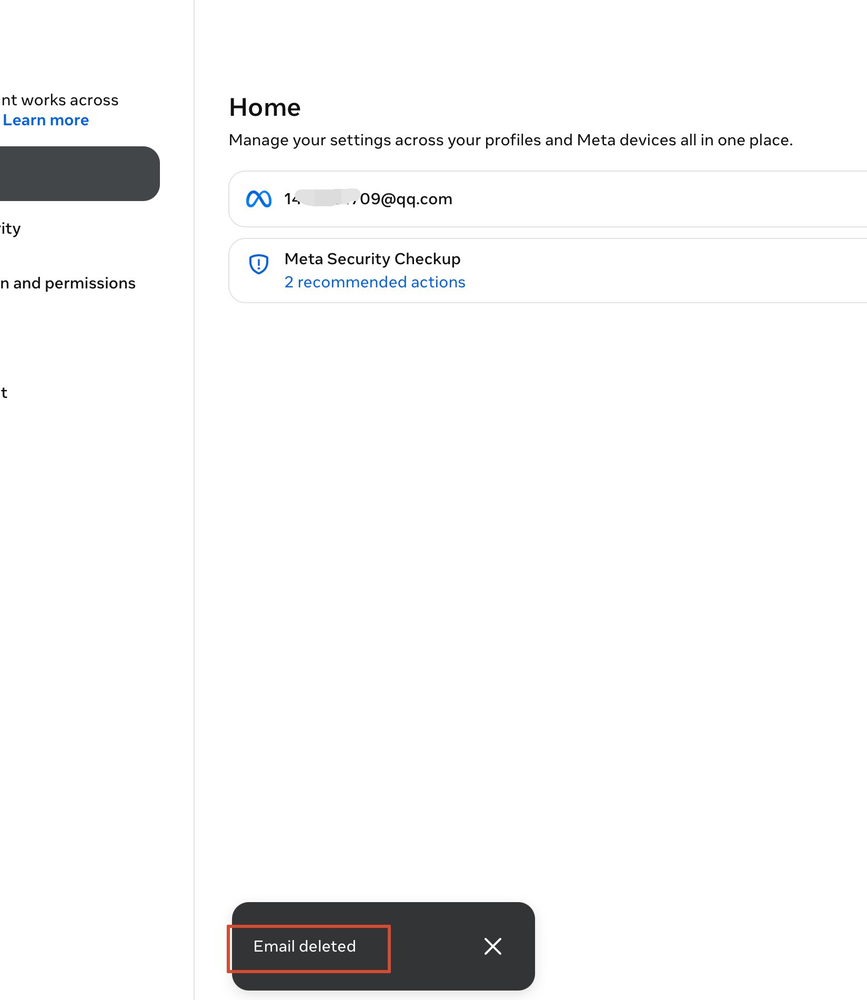